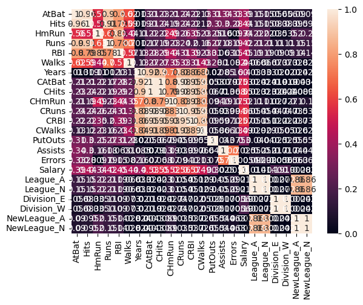

3. Regularization#
When we explored Multiple Linear Regression, we tried to select features by inspecting correlations between a feature and the target as well as between features. But how did we know if we were using the right features and the right number of features? We didn’t.
Regularization is a tool for automatically emphasizing the features that are informative as you fit the model. Recall, in fitting linear regression models, we are minimizing the mean-squared error between our predictions and the true values. The cost function has the form:
Regularization adds a term to the cost function that penalizes large feature weights (\(\theta_i\)). Three common regularization algorithms for linear regression are:
Lasso regression (Least Absolute Shrinkage and Selection Operator):
Elastic Net (combines Ridge and Lasso)
Where
\(\alpha\) is a hyper-parameter that balances how much you want to balance model simplification and model fit.
L2 norm is the sum of squared values of weights
L1 norm is the sum of the absolute values of weights
\(r\) is a hyper-parameter in the range (0,1) that balances the amount of L2 (Ridge) and L1 (Lasso) penalty
That Ridge uses the L2-norm and Lasso uses the L1-norm can be reduced to the following observation:
Ridge regression will make some weights small, but not zero. This is useful if you believe many of the features contribute to the model.
Lasso regression will drive some weights to zero. This is useful if you believe only a few weights contribute.
However, we generally don’t know in advance how our features will contribute to the model, so best to try both and compare.
3.1. Why/when to use regularization?#
High-dimensional data. When number of features (p) is larger than the number of samples (n), linear regression (Ordinary Least Squares) fails.
Colinear features. Linear regression yields unstable coefficient estimates because multiple best-fit solutions exist.
Model over-fitting. Even when p<n, you may have too many parameters. That is, you’re using a model more complex than the data requires. (More about that next class!)
Feature selection. You want to build a model with fewer features.
3.2. Example: Baseball Salary Prediction (1986)#
import pandas as pd
pd.set_option('display.precision', 2)
import numpy as np
import matplotlib.pyplot as plt
import seaborn as sns
data_df = pd.read_csv('https://raw.githubusercontent.com/acakin/hitters/refs/heads/master/hitters.csv')
data_df
| AtBat | Hits | HmRun | Runs | RBI | Walks | Years | CAtBat | CHits | CHmRun | CRuns | CRBI | CWalks | League | Division | PutOuts | Assists | Errors | Salary | NewLeague | |
|---|---|---|---|---|---|---|---|---|---|---|---|---|---|---|---|---|---|---|---|---|
| 0 | 293 | 66 | 1 | 30 | 29 | 14 | 1 | 293 | 66 | 1 | 30 | 29 | 14 | A | E | 446 | 33 | 20 | NaN | A |
| 1 | 315 | 81 | 7 | 24 | 38 | 39 | 14 | 3449 | 835 | 69 | 321 | 414 | 375 | N | W | 632 | 43 | 10 | 475.0 | N |
| 2 | 479 | 130 | 18 | 66 | 72 | 76 | 3 | 1624 | 457 | 63 | 224 | 266 | 263 | A | W | 880 | 82 | 14 | 480.0 | A |
| 3 | 496 | 141 | 20 | 65 | 78 | 37 | 11 | 5628 | 1575 | 225 | 828 | 838 | 354 | N | E | 200 | 11 | 3 | 500.0 | N |
| 4 | 321 | 87 | 10 | 39 | 42 | 30 | 2 | 396 | 101 | 12 | 48 | 46 | 33 | N | E | 805 | 40 | 4 | 91.5 | N |
| ... | ... | ... | ... | ... | ... | ... | ... | ... | ... | ... | ... | ... | ... | ... | ... | ... | ... | ... | ... | ... |
| 317 | 497 | 127 | 7 | 65 | 48 | 37 | 5 | 2703 | 806 | 32 | 379 | 311 | 138 | N | E | 325 | 9 | 3 | 700.0 | N |
| 318 | 492 | 136 | 5 | 76 | 50 | 94 | 12 | 5511 | 1511 | 39 | 897 | 451 | 875 | A | E | 313 | 381 | 20 | 875.0 | A |
| 319 | 475 | 126 | 3 | 61 | 43 | 52 | 6 | 1700 | 433 | 7 | 217 | 93 | 146 | A | W | 37 | 113 | 7 | 385.0 | A |
| 320 | 573 | 144 | 9 | 85 | 60 | 78 | 8 | 3198 | 857 | 97 | 470 | 420 | 332 | A | E | 1314 | 131 | 12 | 960.0 | A |
| 321 | 631 | 170 | 9 | 77 | 44 | 31 | 11 | 4908 | 1457 | 30 | 775 | 357 | 249 | A | W | 408 | 4 | 3 | 1000.0 | A |
322 rows × 20 columns
data_df.dropna(inplace=True)
cat_features = ['League', 'Division', 'NewLeague']
league_df = pd.get_dummies(data_df[cat_features], dtype=int)
league_df
| League_A | League_N | Division_E | Division_W | NewLeague_A | NewLeague_N | |
|---|---|---|---|---|---|---|
| 1 | 0 | 1 | 0 | 1 | 0 | 1 |
| 2 | 1 | 0 | 0 | 1 | 1 | 0 |
| 3 | 0 | 1 | 1 | 0 | 0 | 1 |
| 4 | 0 | 1 | 1 | 0 | 0 | 1 |
| 5 | 1 | 0 | 0 | 1 | 1 | 0 |
| ... | ... | ... | ... | ... | ... | ... |
| 317 | 0 | 1 | 1 | 0 | 0 | 1 |
| 318 | 1 | 0 | 1 | 0 | 1 | 0 |
| 319 | 1 | 0 | 0 | 1 | 1 | 0 |
| 320 | 1 | 0 | 1 | 0 | 1 | 0 |
| 321 | 1 | 0 | 0 | 1 | 1 | 0 |
263 rows × 6 columns
hitters_df = data_df.drop(columns = cat_features).join(league_df)
hitters_df
| AtBat | Hits | HmRun | Runs | RBI | Walks | Years | CAtBat | CHits | CHmRun | ... | PutOuts | Assists | Errors | Salary | League_A | League_N | Division_E | Division_W | NewLeague_A | NewLeague_N | |
|---|---|---|---|---|---|---|---|---|---|---|---|---|---|---|---|---|---|---|---|---|---|
| 1 | 315 | 81 | 7 | 24 | 38 | 39 | 14 | 3449 | 835 | 69 | ... | 632 | 43 | 10 | 475.0 | 0 | 1 | 0 | 1 | 0 | 1 |
| 2 | 479 | 130 | 18 | 66 | 72 | 76 | 3 | 1624 | 457 | 63 | ... | 880 | 82 | 14 | 480.0 | 1 | 0 | 0 | 1 | 1 | 0 |
| 3 | 496 | 141 | 20 | 65 | 78 | 37 | 11 | 5628 | 1575 | 225 | ... | 200 | 11 | 3 | 500.0 | 0 | 1 | 1 | 0 | 0 | 1 |
| 4 | 321 | 87 | 10 | 39 | 42 | 30 | 2 | 396 | 101 | 12 | ... | 805 | 40 | 4 | 91.5 | 0 | 1 | 1 | 0 | 0 | 1 |
| 5 | 594 | 169 | 4 | 74 | 51 | 35 | 11 | 4408 | 1133 | 19 | ... | 282 | 421 | 25 | 750.0 | 1 | 0 | 0 | 1 | 1 | 0 |
| ... | ... | ... | ... | ... | ... | ... | ... | ... | ... | ... | ... | ... | ... | ... | ... | ... | ... | ... | ... | ... | ... |
| 317 | 497 | 127 | 7 | 65 | 48 | 37 | 5 | 2703 | 806 | 32 | ... | 325 | 9 | 3 | 700.0 | 0 | 1 | 1 | 0 | 0 | 1 |
| 318 | 492 | 136 | 5 | 76 | 50 | 94 | 12 | 5511 | 1511 | 39 | ... | 313 | 381 | 20 | 875.0 | 1 | 0 | 1 | 0 | 1 | 0 |
| 319 | 475 | 126 | 3 | 61 | 43 | 52 | 6 | 1700 | 433 | 7 | ... | 37 | 113 | 7 | 385.0 | 1 | 0 | 0 | 1 | 1 | 0 |
| 320 | 573 | 144 | 9 | 85 | 60 | 78 | 8 | 3198 | 857 | 97 | ... | 1314 | 131 | 12 | 960.0 | 1 | 0 | 1 | 0 | 1 | 0 |
| 321 | 631 | 170 | 9 | 77 | 44 | 31 | 11 | 4908 | 1457 | 30 | ... | 408 | 4 | 3 | 1000.0 | 1 | 0 | 0 | 1 | 1 | 0 |
263 rows × 23 columns
hitters_corr = hitters_df.corr()
sns.heatmap(np.abs(hitters_corr), vmin = 0, vmax = 1, annot = True)
<Axes: >

target = ['Salary']
y = hitters_df[target]
X = hitters_df.drop(columns = target)
features = list(X.columns)
features.append('intercept')
from sklearn.linear_model import LinearRegression, Ridge, Lasso, ElasticNet
from sklearn.preprocessing import StandardScaler
from sklearn.model_selection import train_test_split
from sklearn.datasets import make_regression
from sklearn.metrics import root_mean_squared_error, r2_score
X_train, X_test, y_train, y_test = train_test_split(X, y, test_size = 0.2)
sc = StandardScaler()
Z_train = sc.fit_transform(X_train)
Z_test = sc.transform(X_test)
linreg = LinearRegression()
linreg.fit(Z_train, y_train)
y_linreg_train = linreg.predict(Z_train)
y_linreg_test = linreg.predict(Z_test)
R2_linreg_train = r2_score(y_train, y_linreg_train)
R2_linreg_test = r2_score(y_test, y_linreg_test)
alpha = np.logspace(-2, 2, 9)
alpha
lasso_metrics = {}
ridge_metrics = {}
elnet_metrics = {}
lasso_coeffs = {}
lasso_coeffs['feature'] = features
ridge_coeffs = {}
ridge_coeffs['feature'] = features
elnet_coeffs = {}
elnet_coeffs['feature'] = features
for a in alpha:
print(f'Computing for alpha = {a:.3f}')
lasso = Lasso(alpha = a)
lasso.fit(Z_train, y_train)
lasso_coeffs[a] = np.append(lasso.coef_, lasso.intercept_)
y_lasso_train = lasso.predict(Z_train)
y_lasso_test = lasso.predict(Z_test)
lasso_metrics[a] = {'R2_train': r2_score(y_train, y_lasso_train),
'R2_test': r2_score(y_test, y_lasso_test),
'RMSE_train': root_mean_squared_error(y_train, y_lasso_train),
'RMSE_test': root_mean_squared_error(y_test, y_lasso_test)}
ridge = Ridge(alpha = a)
ridge.fit(Z_train, y_train)
ridge_coeffs[a] = np.append(ridge.coef_, ridge.intercept_)
y_ridge_train = ridge.predict(Z_train)
y_ridge_test = ridge.predict(Z_test)
ridge_metrics[a] = {'R2_train': r2_score(y_train, y_ridge_train),
'R2_test': r2_score(y_test, y_ridge_test),
'RMSE_train': root_mean_squared_error(y_train, y_ridge_train),
'RMSE_test': root_mean_squared_error(y_test, y_ridge_test)}
elnet = ElasticNet(alpha = a, l1_ratio = 0.5)
elnet.fit(Z_train, y_train)
elnet_coeffs[a] = np.append(elnet.coef_, elnet.intercept_)
y_elnet_train = elnet.predict(Z_train)
y_elnet_test = elnet.predict(Z_test)
elnet_metrics[a] = {'R2_train': r2_score(y_train, y_elnet_train),
'R2_test': r2_score(y_test, y_elnet_test),
'RMSE_train': root_mean_squared_error(y_train, y_elnet_train),
'RMSE_test': root_mean_squared_error(y_test, y_elnet_test)}
Computing for alpha = 0.010
Computing for alpha = 0.032
Computing for alpha = 0.100
Computing for alpha = 0.316
Computing for alpha = 1.000
Computing for alpha = 3.162
Computing for alpha = 10.000
Computing for alpha = 31.623
Computing for alpha = 100.000
lasso_df = pd.DataFrame(lasso_coeffs)
lasso_df.sort_values(by = 100.0, ascending = False)
| feature | 0.01 | 0.03 | 0.1 | 0.32 | 1.0 | 3.16 | 10.0 | 31.62 | 100.0 | |
|---|---|---|---|---|---|---|---|---|---|---|
| 22 | intercept | 5.29e+02 | 5.29e+02 | 5.29e+02 | 5.29e+02 | 5.29e+02 | 5.29e+02 | 529.20 | 5.29e+02 | 529.20 |
| 11 | CRBI | 2.70e+02 | 2.68e+02 | 2.61e+02 | 2.43e+02 | 2.12e+02 | 2.09e+02 | 205.05 | 2.00e+02 | 159.48 |
| 1 | Hits | 3.02e+02 | 3.02e+02 | 3.02e+02 | 2.98e+02 | 2.75e+02 | 1.99e+02 | 97.88 | 8.91e+01 | 58.53 |
| 5 | Walks | 1.42e+02 | 1.42e+02 | 1.41e+02 | 1.39e+02 | 1.30e+02 | 9.54e+01 | 59.19 | 5.24e+01 | 29.86 |
| 13 | PutOuts | 1.03e+02 | 1.03e+02 | 1.04e+02 | 1.03e+02 | 1.03e+02 | 1.02e+02 | 97.28 | 8.00e+01 | 28.00 |
| 4 | RBI | -4.79e+00 | -3.89e+00 | -1.01e+00 | 1.12e+00 | 4.90e+00 | 0.00e+00 | 0.00 | 0.00e+00 | 1.63 |
| 2 | HmRun | 1.24e+01 | 1.17e+01 | 9.15e+00 | 5.59e+00 | 0.00e+00 | -0.00e+00 | -0.00 | 0.00e+00 | 0.00 |
| 15 | Errors | -5.24e+00 | -5.08e+00 | -4.58e+00 | -3.37e+00 | -0.00e+00 | 0.00e+00 | -0.00 | -0.00e+00 | 0.00 |
| 21 | NewLeague_N | -8.01e-12 | -6.14e-12 | -6.45e-12 | -5.84e-12 | -3.25e-12 | -1.76e-13 | -0.00 | -0.00e+00 | -0.00 |
| 20 | NewLeague_A | 4.51e+01 | 4.49e+01 | 4.42e+01 | 4.26e+01 | 3.77e+01 | 2.15e+01 | 0.00 | 0.00e+00 | 0.00 |
| 19 | Division_W | -1.02e-13 | -0.00e+00 | -3.68e-14 | -3.38e-15 | -1.11e-14 | -2.41e-13 | -0.00 | -1.73e-14 | -0.00 |
| 18 | Division_E | 5.22e+01 | 5.22e+01 | 5.21e+01 | 5.23e+01 | 5.26e+01 | 5.20e+01 | 47.60 | 2.57e+01 | 0.00 |
| 17 | League_N | 1.15e-12 | 1.28e-13 | 9.53e-14 | 4.78e-13 | 2.25e-13 | 0.00e+00 | 0.00 | 0.00e+00 | 0.00 |
| 16 | League_A | -4.02e+01 | -4.00e+01 | -3.92e+01 | -3.71e+01 | -3.15e+01 | -1.67e+01 | -0.00 | -0.00e+00 | -0.00 |
| 12 | CWalks | -1.95e+02 | -1.95e+02 | -1.94e+02 | -1.89e+02 | -1.66e+02 | -8.60e+01 | -0.00 | 0.00e+00 | 0.00 |
| 14 | Assists | 2.04e+01 | 2.00e+01 | 1.88e+01 | 1.57e+01 | 8.08e+00 | 0.00e+00 | -0.00 | -0.00e+00 | -0.00 |
| 3 | Runs | -1.02e+02 | -1.01e+02 | -9.93e+01 | -9.24e+01 | -7.06e+01 | -1.93e+01 | 0.00 | 0.00e+00 | 0.00 |
| 10 | CRuns | 3.59e+02 | 3.57e+02 | 3.51e+02 | 3.19e+02 | 2.34e+02 | 9.78e+01 | 23.57 | 1.17e+01 | 0.00 |
| 9 | CHmRun | -1.35e+01 | -1.25e+01 | -8.98e+00 | -0.00e+00 | 1.21e+01 | 3.83e+00 | 0.00 | 0.00e+00 | 0.00 |
| 8 | CHits | 3.41e+01 | 2.93e+01 | 1.51e+01 | 0.00e+00 | 0.00e+00 | 0.00e+00 | 0.00 | 0.00e+00 | 0.00 |
| 7 | CAtBat | -2.58e+02 | -2.50e+02 | -2.23e+02 | -1.64e+02 | -7.37e+01 | -0.00e+00 | 0.00 | 0.00e+00 | 0.00 |
| 6 | Years | 1.77e+01 | 1.68e+01 | 1.40e+01 | 5.77e+00 | -0.00e+00 | -0.00e+00 | 0.00 | 0.00e+00 | 0.00 |
| 0 | AtBat | -1.85e+02 | -1.85e+02 | -1.87e+02 | -1.87e+02 | -1.75e+02 | -1.10e+02 | -0.00 | 0.00e+00 | 0.00 |
ridge_df = pd.DataFrame(ridge_coeffs)
ridge_df.sort_values(by = 100.0, ascending = False)
| feature | 0.01 | 0.03 | 0.1 | 0.32 | 1.0 | 3.16 | 10.0 | 31.62 | 100.0 | |
|---|---|---|---|---|---|---|---|---|---|---|
| 22 | intercept | 529.20 | 529.20 | 529.20 | 529.20 | 529.20 | 529.20 | 529.20 | 529.20 | 529.20 |
| 13 | PutOuts | 103.41 | 103.44 | 103.53 | 103.75 | 104.12 | 104.37 | 103.15 | 95.69 | 75.77 |
| 11 | CRBI | 289.20 | 280.72 | 259.62 | 219.97 | 169.35 | 128.41 | 98.77 | 70.82 | 49.42 |
| 1 | Hits | 309.63 | 307.22 | 301.16 | 288.63 | 262.94 | 210.09 | 137.03 | 79.53 | 48.83 |
| 5 | Walks | 143.29 | 142.77 | 141.41 | 138.28 | 131.01 | 114.77 | 88.89 | 63.62 | 46.21 |
| 9 | CHmRun | -25.99 | -20.92 | -8.45 | 14.19 | 41.06 | 57.83 | 59.69 | 51.98 | 40.65 |
| 8 | CHits | -24.15 | -9.82 | 22.24 | 67.49 | 98.40 | 99.47 | 78.32 | 54.61 | 40.46 |
| 10 | CRuns | 378.71 | 367.85 | 340.59 | 287.47 | 210.05 | 128.77 | 72.66 | 46.96 | 37.23 |
| 4 | RBI | -6.47 | -5.36 | -2.42 | 3.97 | 14.69 | 27.93 | 37.75 | 37.41 | 32.70 |
| 7 | CAtBat | -220.35 | -221.38 | -219.56 | -197.55 | -133.56 | -53.26 | -1.17 | 20.43 | 27.38 |
| 18 | Division_E | 26.11 | 26.13 | 26.20 | 26.35 | 26.60 | 26.85 | 26.72 | 25.64 | 22.37 |
| 3 | Runs | -105.25 | -103.45 | -98.83 | -89.13 | -71.81 | -45.19 | -15.31 | 7.50 | 20.00 |
| 0 | AtBat | -189.22 | -188.32 | -186.14 | -181.48 | -168.02 | -128.98 | -64.74 | -10.64 | 14.84 |
| 12 | CWalks | -200.36 | -198.33 | -193.31 | -183.39 | -165.12 | -129.39 | -73.33 | -18.31 | 12.95 |
| 6 | Years | 14.96 | 14.56 | 13.16 | 8.87 | 0.33 | -7.27 | -6.12 | 3.00 | 12.92 |
| 17 | League_N | 19.87 | 19.90 | 19.95 | 19.94 | 19.70 | 19.11 | 17.49 | 13.45 | 7.76 |
| 20 | NewLeague_A | 22.33 | 22.40 | 22.57 | 22.79 | 22.83 | 22.17 | 19.68 | 14.13 | 6.80 |
| 2 | HmRun | 14.28 | 13.20 | 10.39 | 4.36 | -5.67 | -17.75 | -24.33 | -16.10 | 0.80 |
| 14 | Assists | 19.20 | 19.23 | 19.13 | 18.22 | 15.23 | 9.95 | 4.06 | -0.11 | -1.81 |
| 15 | Errors | -4.50 | -4.69 | -5.11 | -5.74 | -6.35 | -6.92 | -7.10 | -5.61 | -2.75 |
| 21 | NewLeague_N | -22.33 | -22.40 | -22.57 | -22.79 | -22.83 | -22.17 | -19.68 | -14.13 | -6.80 |
| 16 | League_A | -19.87 | -19.90 | -19.95 | -19.94 | -19.70 | -19.11 | -17.49 | -13.45 | -7.76 |
| 19 | Division_W | -26.11 | -26.13 | -26.20 | -26.35 | -26.60 | -26.85 | -26.72 | -25.64 | -22.37 |
elnet_df = pd.DataFrame(elnet_coeffs)
elnet_df.sort_values(by = 100.0, ascending = False)
| feature | 0.01 | 0.03 | 0.1 | 0.32 | 1.0 | 3.16 | 10.0 | 31.62 | 100.0 | |
|---|---|---|---|---|---|---|---|---|---|---|
| 22 | intercept | 529.20 | 529.20 | 529.20 | 529.20 | 529.20 | 529.20 | 529.20 | 529.20 | 529.20 |
| 11 | CRBI | 167.23 | 126.94 | 97.57 | 69.63 | 48.74 | 35.24 | 23.35 | 11.71 | 4.10 |
| 10 | CRuns | 206.23 | 125.34 | 70.59 | 46.06 | 36.94 | 30.52 | 21.56 | 11.06 | 3.88 |
| 8 | CHits | 98.74 | 98.46 | 76.96 | 53.63 | 39.98 | 31.23 | 21.56 | 10.96 | 3.83 |
| 9 | CHmRun | 42.06 | 58.13 | 59.31 | 51.23 | 40.21 | 30.88 | 21.10 | 10.69 | 3.71 |
| 7 | CAtBat | -129.57 | -49.62 | 0.00 | 20.65 | 27.43 | 26.62 | 19.90 | 10.39 | 3.64 |
| 12 | CWalks | -163.93 | -127.07 | -69.94 | -15.15 | 13.69 | 22.08 | 18.18 | 9.70 | 3.39 |
| 4 | RBI | 15.21 | 28.41 | 37.70 | 36.73 | 32.52 | 27.86 | 19.62 | 9.74 | 3.27 |
| 5 | Walks | 130.48 | 113.69 | 87.36 | 62.36 | 45.52 | 32.53 | 20.14 | 9.41 | 3.05 |
| 1 | Hits | 261.24 | 206.90 | 133.49 | 77.29 | 47.78 | 32.08 | 19.84 | 9.28 | 3.00 |
| 3 | Runs | -70.77 | -43.70 | -13.73 | 7.87 | 20.23 | 22.26 | 16.47 | 8.15 | 2.63 |
| 6 | Years | -0.10 | -7.39 | -5.45 | 3.24 | 13.06 | 17.14 | 14.32 | 7.74 | 2.62 |
| 0 | AtBat | -166.94 | -126.33 | -61.34 | -8.00 | 15.13 | 20.61 | 15.98 | 8.02 | 2.60 |
| 2 | HmRun | -6.17 | -18.19 | -24.15 | -14.80 | 1.41 | 12.45 | 12.48 | 6.81 | 2.21 |
| 13 | PutOuts | 104.13 | 104.36 | 102.97 | 94.99 | 74.39 | 45.02 | 21.11 | 7.88 | 2.14 |
| 18 | Division_E | 26.62 | 26.86 | 26.68 | 25.52 | 21.98 | 15.06 | 7.25 | 2.26 | 0.12 |
| 14 | Assists | 15.00 | 9.59 | 3.62 | -0.12 | -1.55 | -0.73 | -0.00 | 0.00 | 0.00 |
| 15 | Errors | -6.34 | -6.87 | -6.88 | -5.41 | -2.29 | -0.00 | 0.00 | 0.00 | 0.00 |
| 16 | League_A | -19.67 | -19.01 | -17.23 | -12.85 | -6.84 | -2.28 | -0.00 | 0.00 | 0.00 |
| 17 | League_N | 19.66 | 19.01 | 17.23 | 12.85 | 6.84 | 2.28 | 0.00 | -0.00 | -0.00 |
| 20 | NewLeague_A | 22.80 | 22.05 | 19.34 | 13.46 | 5.86 | 0.86 | 0.00 | 0.00 | 0.00 |
| 21 | NewLeague_N | -22.79 | -22.05 | -19.34 | -13.46 | -5.86 | -0.86 | -0.00 | -0.00 | -0.00 |
| 19 | Division_W | -26.61 | -26.86 | -26.68 | -25.52 | -21.98 | -15.06 | -7.25 | -2.26 | -0.12 |